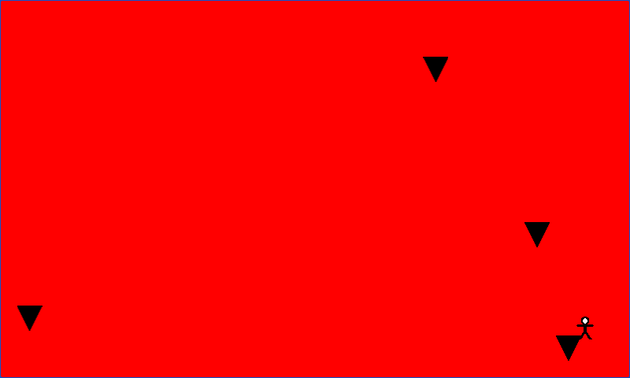

Per-Pixel Collision
Ported from Microsoft's XNA 4.0 2D Collision Tutorial 2: Per-Pixel.
Source for this sample on GitHub ↗

Play ▸Opens in a new tab. Click the canvas so it receives keyboard input.
About this sample
Move the person under falling blocks. The background turns red only when opaque pixels of
the two sprites overlap. Their rectangular bounds can overlap while the visible shapes miss.
The sample reads the original texture pixels through Texture2D.GetData and tests
the shared area, pixel by pixel.
Controls
| Action | Keyboard | Gamepad |
|---|---|---|
| Move person | Left / Right arrow | D-pad left / right |
| Exit | Esc or close the tab | Back |